제품상세
제품설명 영역 : 영양건강
제품상세 Style : 제목 + 설명 + 이미지
자연이 담고 있는 영양소를 농축하여 제공
자연의 원료식물에는 각기 고유의 색깔이 있으며, 더블엑스 정제 각각의 색들은 원료식물이 갖고 있는 고유의 영양소입니다.
더블엑스는 14가지 비타민과 9가지 무기질뿐만 아니라, 20여가지 식물농축물*에서 얻어지는 폴리페놀, 안토시아닌, 이소플라본, 카로티노이드 등 다양한 식물영양소를 함유하여 공급해 줍니다.
더블엑스는 14가지 비타민과 9가지 무기질뿐만 아니라, 20여가지 식물농축물*에서 얻어지는 폴리페놀, 안토시아닌, 이소플라본, 카로티노이드 등 다양한 식물영양소를 함유하여 공급해 줍니다.
한국인 대상 인체적용연구를 위해 더블엑스의 섭취가 항산화에 도움을 줄 수 있다는 것이 확인되었습니다. (YJ Kim et al,. Nutrients 5, 2013)
*20여 가지 식물농축물은 더블엑스의 부원료입니다.
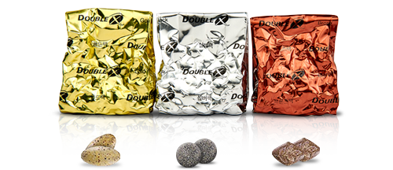
제품상세 Style : 제목 + 설명 + 이미지 리스트
10% 증가한 항산화수치를 갖는 풍부한 영양성분
14가지 비타민, 9가지 무기질, 20여 가지 식물농축물*에서 얻어지는 다양한 식물영양소를 함유하고 있습니다.
10% 증가한 항산화수치(ORAC Value)를 갖고 있습니다.
10% 증가한 항산화수치(ORAC Value)를 갖고 있습니다.
식물영양소는 식물이 해충의 공격, 물리적인 스트레스, 산화 등 다양한 외부 유해요인으로부터 자신을 보호하기 위해 스스로 만들어내는 물질입니다.
*20여 가지 식물농축물은 더블엑스의 부원료입니다.
-
알팔파
-
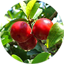
아세로라(주원료)
-
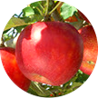
사과
-
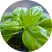
바질
-
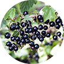
블랙커런트
-
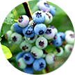
블루베리
-
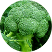
브루콜리
-
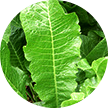
양고추냉이
-
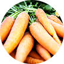
당근
-
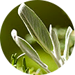
세이지
-
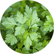
파슬리
-
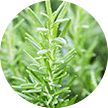
로즈마리
-
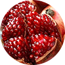
석류
-
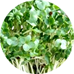
물냉이
-
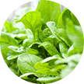
시금치
-
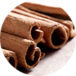
계피
-
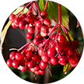
크랜베리
-
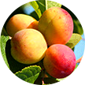
푸룬
-
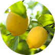
감귤류 (레몬, 그레이프 푸르트, 만다린 오렌지)